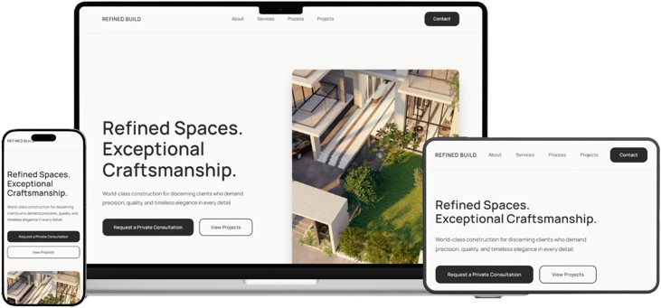
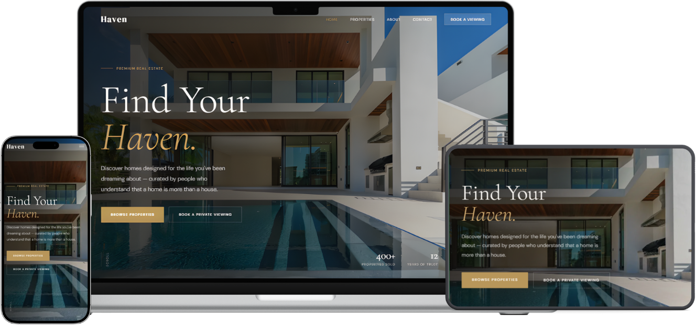
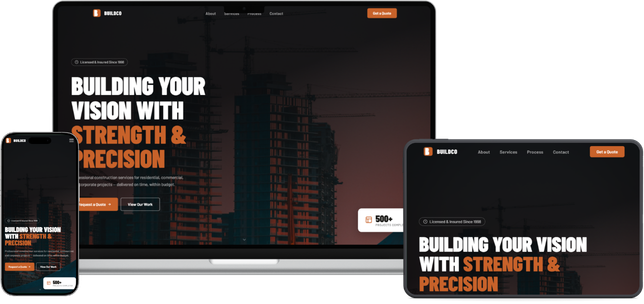
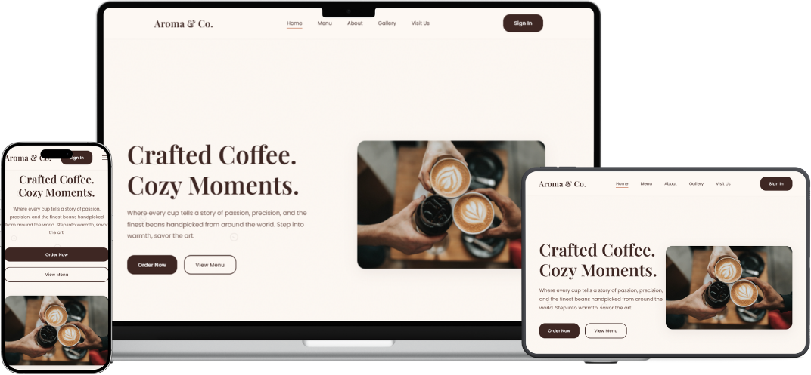

Refined Build
Construction company website
A corporate website concept with a clean layout and bold typography. I practiced page structure, animation with Framer Motion, and client-side routing.
I've spent the past 10 months learning web development by building real projects, from landing pages to a small app with a database. I'm looking for an OJT where I can learn from a dev team and contribute to real work.
I'm a 4th Year BS Information Technology student. I got into web development because I like seeing something I designed turn into a page that people can actually open and use.
Most of what I know came from building. I start in Figma or on paper, code it with React, Next.js and Tailwind, then deploy it on Vercel. Every project below is something I made for practice, so I can show how I work and where I'm still improving.
For my OJT, I want to learn how a real team works: Git workflows, code reviews, and shipping features that real users depend on.
Personal and practice projects. Each one has a live demo and a short write-up of what I built and learned.

Construction company website
A corporate website concept with a clean layout and bold typography. I practiced page structure, animation with Framer Motion, and client-side routing.

Real estate website
A property listing site that works on desktop, tablet and mobile. I focused on responsive layouts and presenting a lot of image-heavy content clearly.

Construction company website
A second construction site where I practiced validating form input with a schema-first approach, so bad data is caught before it is submitted.

Cafe website with a database
My first project that connects to a database. It shows menu highlights and was built with plain HTML, CSS and JavaScript, with Supabase for the data.
Build responsive pages from a design, fix UI bugs, and connect a frontend to an API or Supabase.
Working in a team with Git, writing cleaner and more maintainable code, and testing before release.
500 hours required. Open to onsite, hybrid or remote.
If your company is accepting OJT students, I'd be glad to share my resume or answer any questions.